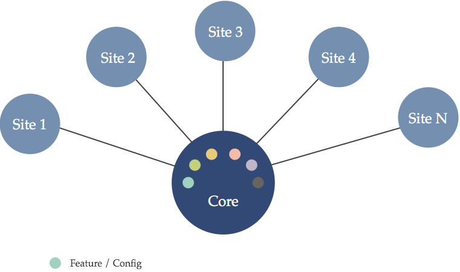
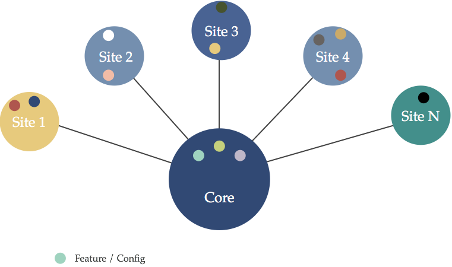
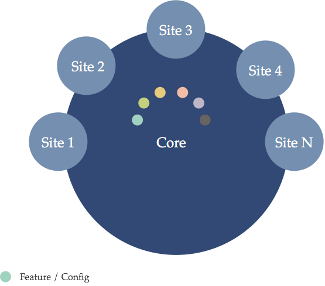
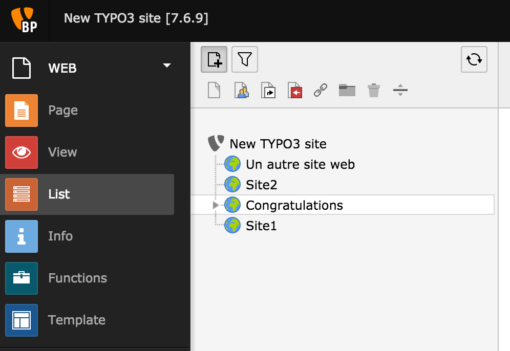

Micro site
Présentation
Fabrice Scoyer
Freelance Drupal - www.flocondetoile.fr
Micro site ?
Créer un micro site depuis une instance Drupal 8 aussi facilement que publier un article
Les solutions existantes
- Multi-sites natif
- Domain access
Multi-sites idéal
Multi-sites une tendance
Domain access
Micro site : pourquoi ?
- Multi-sites natif utilisé pour publier des sites "simples"
- Altérations assez lourdes pour limiter les droits au niveau du backoffice
Une impression d'un marteau-piqueur face à un clou
Simple comment ?
- Accessible à des utilisateurs Lambda / webmestres
- Pas besoin de droits avancés sur la configuration
- Pas d'intervention lourde sur l'infrastructure
- Utiliser au maximum les possibilités de Drupal 8, mais simplement dans le contexte d'un micro-site
C'est quoi un micro site ?
- Un site simple (publication essentiellement)
- Utilisateurs : quelques webmestres / contributeurs
- Permissions : des règles standard (80/20)
- Un menu, des pages, des catégories
- Une gestion d'arboresence
L'exemple du multi-site sur Typo3
Quelques autres avantages
- Publication cross sites à portée de clics
- Mêmes utilisateurs
- Site building de Drupal permet de configurer sur mesure les types de micro sites (que ce soit les sites, ou les types de contenus)
Le module micro site
https://www.drupal.org/project/micro_site
- Entité Site : page d'accueil et point d'accroche pour l'url du micro site
- Utilisateurs : gérés uniquement via l'entité site
- Roles : Propriétaire, Gestionnaire, Contributeur, Membre
- Divers : logo / slogan / email / shield / assets (@todo)
Un micro site
Extension de micro site
Le module micro menu
https://www.drupal.org/project/micro_menu
- Un menu dédié au micro site
- Interface native de Drupal 8 pour la gestion d'un menu
- Arboresence du site gérée par Drag'n Drop
Micro menu
Le module micro node
https://www.drupal.org/project/micro_node
- Intègre les noeuds avec un micro site
- Type de contenus pouvant être associé à un micro site
- Droits spécifiques dans le contexte d'un micro site
- Utilisation des Grants / Access records
Micro node
Le module micro user
https://www.drupal.org/project/micro_user
- Très simple, contrôle authenfication sur un micro site
- Aucune configuration particulière sur l'utilisateur
- Un utilisateur d'un micro-site peut ne jamais savoir qu'il s'agit d'un micro-site
Le module micro sso
https://www.drupal.org/project/micro_sso
- Fournit un SSO light depuis le Master => micro site
- Merci @pounard
Le module micro contact
https://www.drupal.org/project/micro_contact
- Donne accès à un formulaire de contact depuis le micro site
- Ou prévient l'accès à des formulaires de contact non déclarés sur le micro-site
Le module micro simple sitemap
https://www.drupal.org/project/micro_simple_sitemap
- Intégre le module simple sitemap avec les micro sites
- Chaque micro site dispose de son sitemap.xml
Mais comment ca marche ?
Comment ca marche ?
- Les modules fournissent le coeur du fonctionnement
- La création des types de micro site relèvent du site building (champs, views, etc.) pour concevoir la page d'accueil
- De même que pour les types de contenu activés pour les micro sites
- Et ensuite place à Twig !
Mais est-ce que ca marche ?
Oui
Mais...
...En version alpha car il manque
- Les tests. Tout tester !!!
- Encore des réglages (interdire par défaut l'accès à une route non explicitement autorisée depuis un micro site par exemple)
- @todo Micro taxonomy pour avoir une couverture fonctionnelle à minima (page + menu + catégorie)
- @todo des assets (css) personnalisés par site
- et autres petits raffinements (micro webform, micro views, micro sitemap, selection thème, etc)
En version alpha car il manque...
- La gestion du user-1 ou de la permission ByPass particulièrement pénible
- [PP-1] Remove the special behavior of uid #1